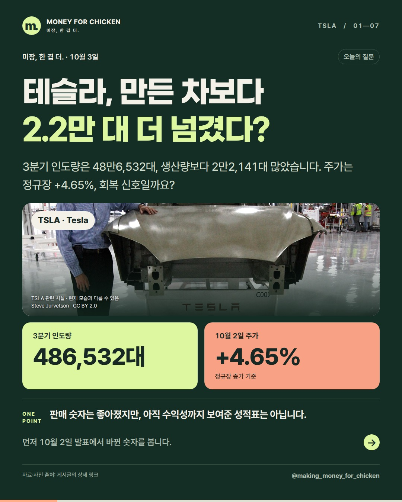
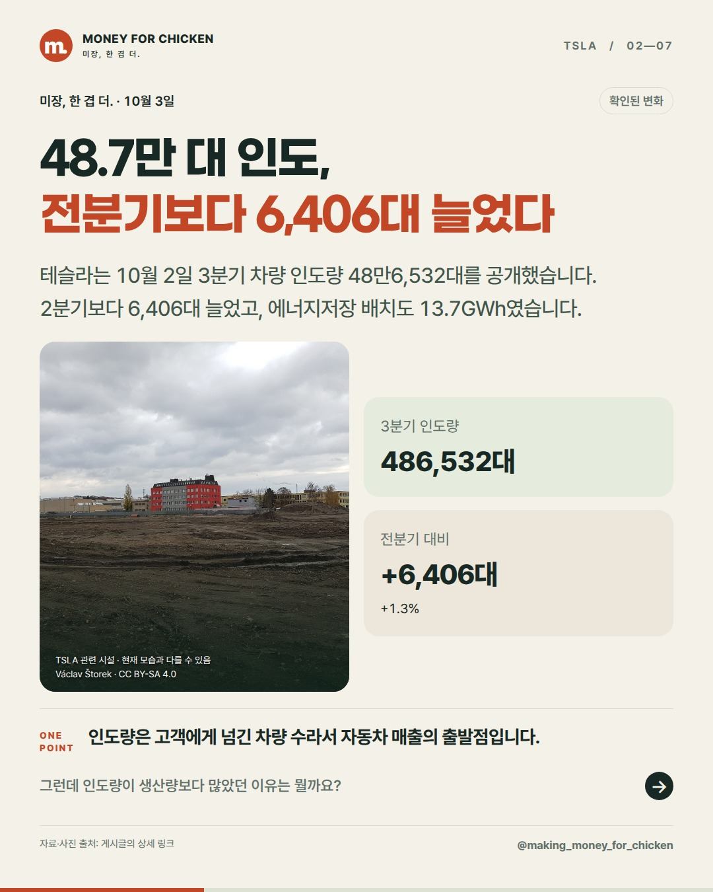
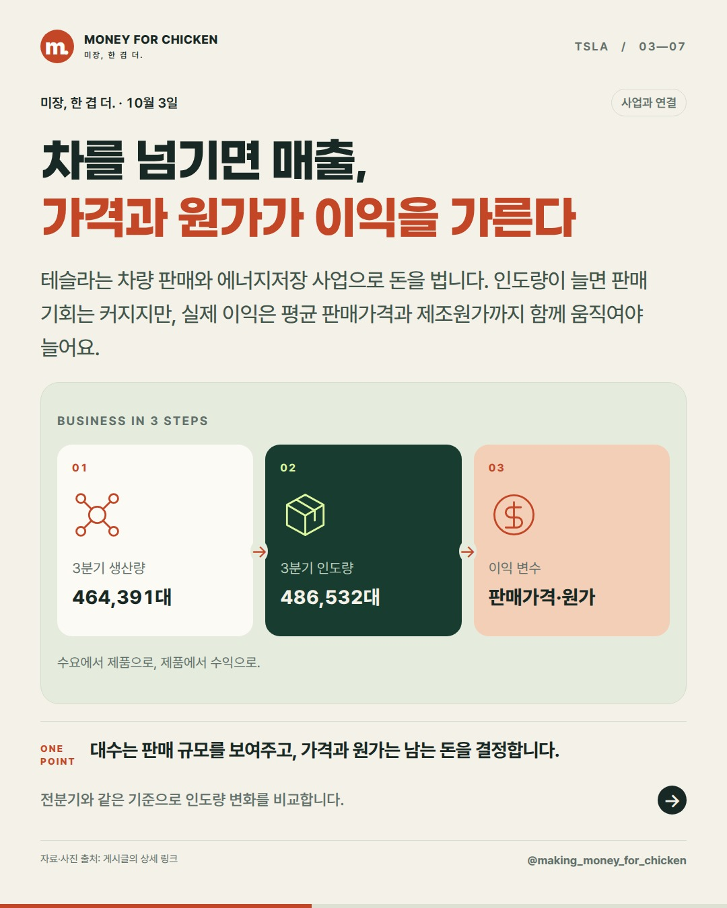
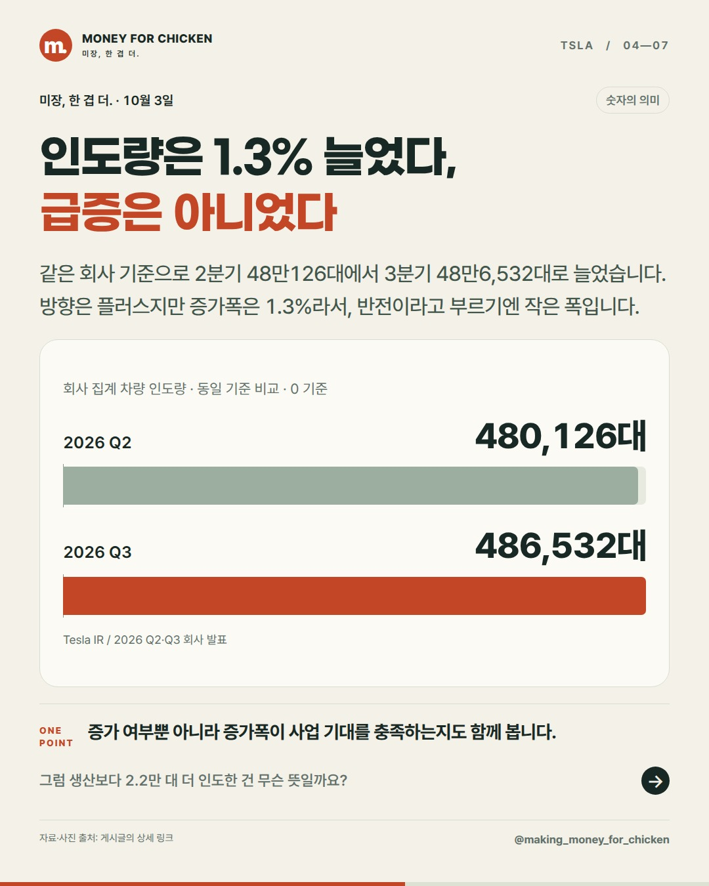
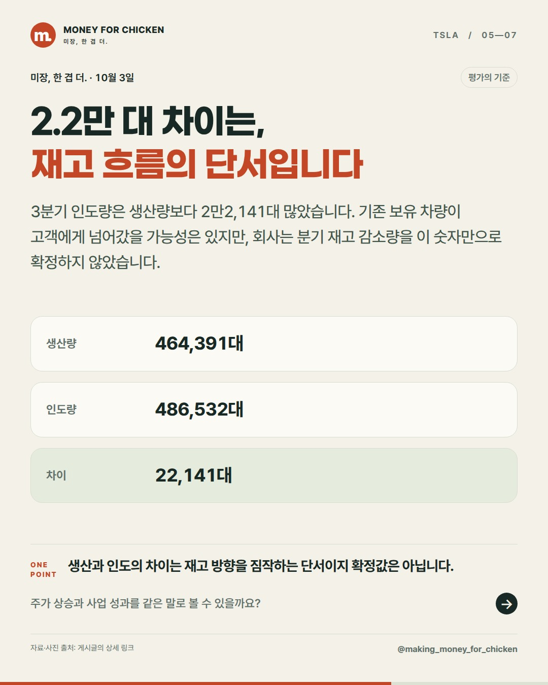
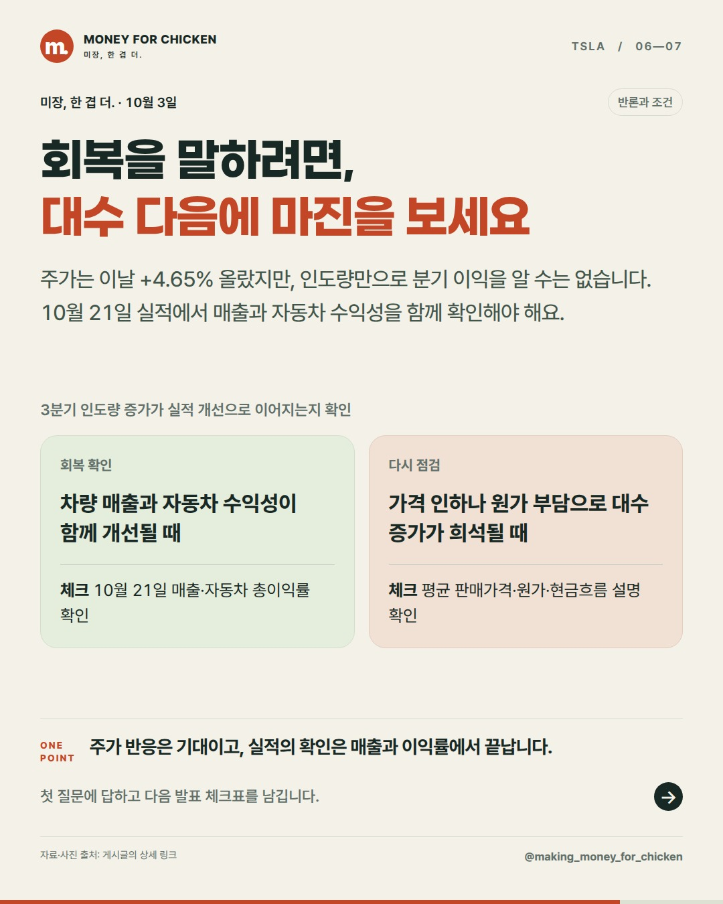
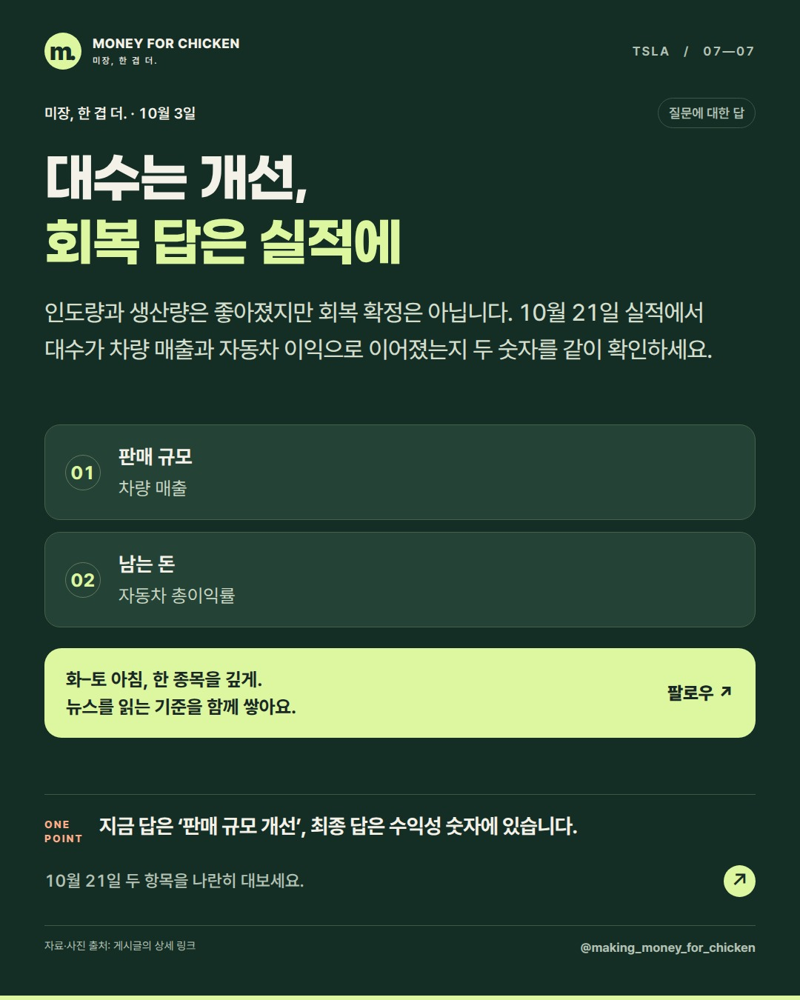

01 / 07
테슬라, 만든 차보다 2.2만 대 더 넘겼다?

3분기 인도량은 48만6,532대, 생산량보다 2만2,141대 많았습니다. 주가는 정규장 +4.65%, 회복 신호일까요?
판매 숫자는 좋아졌지만, 아직 수익성까지 보여준 성적표는 아닙니다.
먼저 10월 2일 발표에서 바뀐 숫자를 봅니다.
미장, 한 겹 더. · 10월 3일
인도량은 전분기보다 소폭 늘고 생산량도 웃돌았습니다. 판매 규모에는 긍정적인 단서지만, 10월 21일 실적에서 매출과 자동차 수익성까지 확인해야 회복을 말할 수 있습니다.
01 / 07

3분기 인도량은 48만6,532대, 생산량보다 2만2,141대 많았습니다. 주가는 정규장 +4.65%, 회복 신호일까요?
판매 숫자는 좋아졌지만, 아직 수익성까지 보여준 성적표는 아닙니다.
먼저 10월 2일 발표에서 바뀐 숫자를 봅니다.
02 / 07

테슬라는 10월 2일 3분기 차량 인도량 48만6,532대를 공개했습니다. 2분기보다 6,406대 늘었고, 에너지저장 배치도 13.7GWh였습니다.
인도량은 고객에게 넘긴 차량 수라서 자동차 매출의 출발점입니다.
그런데 인도량이 생산량보다 많았던 이유는 뭘까요?
03 / 07

테슬라는 차량 판매와 에너지저장 사업으로 돈을 법니다. 인도량이 늘면 판매 기회는 커지지만, 실제 이익은 평균 판매가격과 제조원가까지 함께 움직여야 늘어요.
대수는 판매 규모를 보여주고, 가격과 원가는 남는 돈을 결정합니다.
전분기와 같은 기준으로 인도량 변화를 비교합니다.
04 / 07

같은 회사 기준으로 2분기 48만126대에서 3분기 48만6,532대로 늘었습니다. 방향은 플러스지만 증가폭은 1.3%라서, 반전이라고 부르기엔 작은 폭입니다.
증가 여부뿐 아니라 증가폭이 사업 기대를 충족하는지도 함께 봅니다.
그럼 생산보다 2.2만 대 더 인도한 건 무슨 뜻일까요?
05 / 07

3분기 인도량은 생산량보다 2만2,141대 많았습니다. 기존 보유 차량이 고객에게 넘어갔을 가능성은 있지만, 회사는 분기 재고 감소량을 이 숫자만으로 확정하지 않았습니다.
생산과 인도의 차이는 재고 방향을 짐작하는 단서이지 확정값은 아닙니다.
주가 상승과 사업 성과를 같은 말로 볼 수 있을까요?
06 / 07

주가는 이날 +4.65% 올랐지만, 인도량만으로 분기 이익을 알 수는 없습니다. 10월 21일 실적에서 매출과 자동차 수익성을 함께 확인해야 해요.
주가 반응은 기대이고, 실적의 확인은 매출과 이익률에서 끝납니다.
첫 질문에 답하고 다음 발표 체크표를 남깁니다.
07 / 07

인도량과 생산량은 좋아졌지만 회복 확정은 아닙니다. 10월 21일 실적에서 대수가 차량 매출과 자동차 이익으로 이어졌는지 두 숫자를 같이 확인하세요.
지금 답은 ‘판매 규모 개선’, 최종 답은 수익성 숫자에 있습니다.
10월 21일 두 항목을 나란히 대보세요.